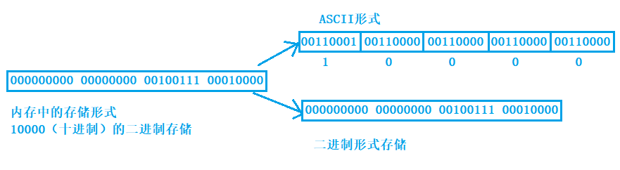
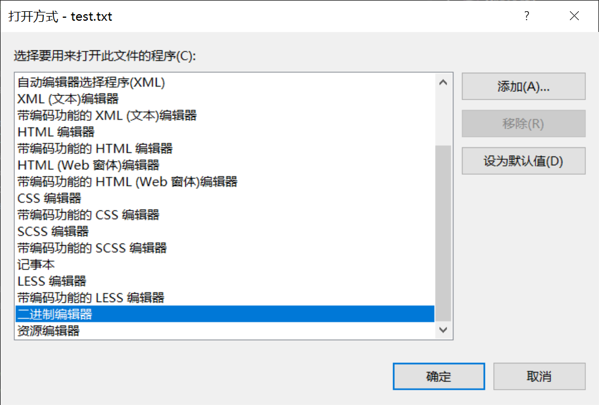
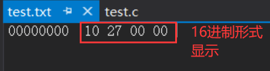
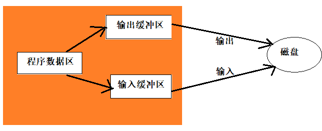
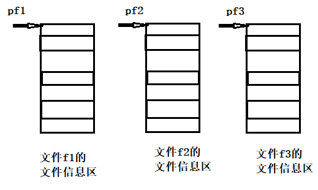
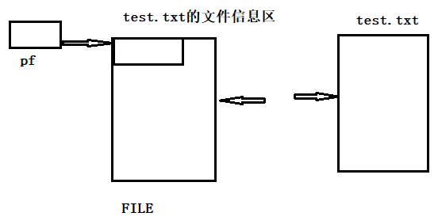

什么是文件
磁盘上的文件是文件。
但是在程序设计中，我们一般谈的文件有两种：程序文件、数据文件
程序文件
包括源程序文件（后缀为.c）,目标文件（windows环境后缀为.obj）,可执行程序（windows环境后缀为.exe）。
数据文件
文件的内容不一定是程序，而是程序运行时读写的数据，比如程序运行需要从中读取数据的文件，或者输出内容的文件。
本章讨论的是数据文件。
在以前各章所处理数据的输入输出都是以终端为对象的，即从终端的键盘输入数据，运行结果显示到显示器上。
其实有时候我们会把信息输出到磁盘上，当需要的时候再从磁盘上把数据读取到内存中使用，这里处理的就是磁盘上文件。
文件名
一个文件要有一个唯一的文件标识，以便用户识别和引用。
文件名包含3部分：文件路径+文件名主干+文件后缀
例如：c:\code\test.txt
为了方便起见，文件标识常被称为文件名。
文件类型
根据数据的组织形式，数据文件被称为文本文件或者二进制文件。
数据在内存中以二进制的形式存储，如果不加转换的输出到外存，就是二进制文件。如果要求在外存上以ASCII码的形式存储，则需要在存储前转换。以ASCII字符的形式存储的文件就是文本文件。
一个数据在内存中是怎么存储的呢？
字符一律以ASCII形式存储，数值型数据既可以用ASCII形式存储，也可以使用二进制形式存储。
如有整数10000，如果以ASCII码的形式输出到磁盘，则磁盘中占用5个字节（每个字符一个字节），而二进制形式输出，则在磁盘上只占4个字节（VS2017测试）。
#include <stdio.h>
int main()
{
int a = 10000;
FILE* pf = fopen("test.txt", "wb");
fwrite(&a, 4, 1, pf);//二进制的形式写到文件中
fclose(pf);
pf = NULL;
return 0;
}
  
文件缓冲区
ANSIC 标准采用“缓冲文件系统”处理的数据文件的，所谓缓冲文件系统是指系统自动地在内存中为程序中每一个正在使用的文件开辟一块“文件缓冲区”。从内存向磁盘输出数据会先送到内存中的缓冲区，装满缓冲区后才一起送到磁盘上。如果从磁盘向计算机读入数据，则从磁盘文件中读取数据输入到内存缓冲区（充满缓冲区），然后再从缓冲区逐个地将数据送到程序数据区（程序变量等）。缓冲区的大小根据C编译系统决定的。

文件指针
缓冲文件系统中，关键的概念是“文件类型指针”，简称“文件指针”。
每个被使用的文件都在内存中开辟了一个相应的文件信息区，用来存放文件的相关信息（如文件的名字，文件状态及文件当前的位置等）。这些信息是保存在一个结构体变量中的。该结构体类型是有系统声明的，取名FILE.
struct _iobuf {
char *_ptr;
int _cnt;
char *_base;
int _flag;
int _file;
int _charbuf;
int _bufsiz;
char *_tmpfname;
};
typedef struct _iobuf FILE;
不同的C编译器的FILE类型包含的内容不完全相同，但是大同小异。
每当打开一个文件的时候，系统会根据文件的情况自动创建一个FILE结构的变量，并填充其中的信息，使用者不必关心细节。
一般都是通过一个FILE的指针来维护这个FILE结构的变量，这样使用起来更加方便。
下面我们可以创建一个FILE*的指针变量:
FILE* pf;//文件指针变量
定义pf是一个指向FILE类型数据的指针变量。可以使pf指向某个文件的文件信息区（是一个结构体变量）。通过该文件信息区中的信息就能够访问该文件。也就是说，通过文件指针变量能够找到与它关联的文件。 比如：

文件的打开和关闭
文件在读写之前应该先打开文件，在使用结束之后应该关闭文件。
在编写程序的时候，在打开文件的同时，都会返回一个FILE*的指针变量指向该文件，也相当于建立了指针和文件的关系。
ANSIC 规定使用fopen函数来打开文件，fclose来关闭文件。
FILE * fopen ( const char * filename, const char * mode );
int fclose ( FILE * stream );
打开方式如下：
| 使用方式 | 含义 | 如果指定文件不存在 |
|---|---|---|
| “r”（只读） | 为了输入数据，打开一个已经存在的文本文件 | 出错 |
| “w”（只写） | 为了输出数据，打开一个文本文件 | 建立一个新的文件 |
| “a”（追加） | 向文本文件尾添加数据 | 出错 |
| “rb”（只读） | 为了输入数据，打开一个二进制文件 | 出错 |
| “wb”（只写） | 为了输出数据，打开一个二进制文件 | 建立一个新的文件 |
| “ab”（追加） | 向一个二进制文件尾添加数据 | 出错 |
| “r+”（读写） | 为了读和写，打开一个文本文件 | 出错 |
| “w+”（读写） | 为了读和写，建议一个新的文件 | 建立一个新的文件 |
| “a+”（读写） | 打开一个文件，在文件尾进行读写 | 建立一个新的文件 |
| “rb+”（读写） | 为了读和写打开一个二进制文件 | 出错 |
| “wb+”（读写） | 为了读和写，新建一个新的二进制文件 | 建立一个新的文件 |
| “ab+”（读写） | 打开一个二进制文件，在文件尾进行读和写 | 建立一个新的文件 |
#include <errno.h>
#include <string.h>
int main()
{
//打开文件test.txt
//相对路径
//.. 表示上一级路径
//. 表示当前路径
//fopen("../../test.txt", "r")
//fopen("test.txt", "r");
//绝对路径的写法
//fopen("D:\\A-yan\\C\Project1\\Project1\\test.txt", "r");
FILE* pf = fopen("test.txt", "w");
if(pf == NULL)
{
printf("%s\n", strerror(errno));
return 0;
}
//打开成功
//读文件
//关闭文件
fclose(pf);
pf = NULL;
return 0;
}

文件的顺序读写
| 功能 | 函数名 | 适用于 |
|---|---|---|
| 字符输入函数 | fgetc | 所有输入流 |
| 字符输出函数 | fputc | 所有输出流 |
| 文本行输入函数 | fgets | 所有输入流 |
| 文本行输出函数 | fputs | 所有输出流 |
| 格式化输入函数 | fscanf | 所有输入流 |
| 格式化输出函数 | fprintf | 所有输出流 |
| 二进制输入 | fread | 文件 |
| 二进制输出 | fwrite | 文件 |
对比一组函数
scanf/fscanf/sscanf
printf/fprintf/sprintf
scanf/printf 是针对标准输入流/标准输出流 格式化输入/输出语句
fscanf/fprintf 是针对所有输入流/所有输出流 格式化输入/输出语句
sscanf/sprintf 是从字符串中读取格式化数据/把格式化数据输出成（存储成）字符串
fputc
FILE* pfWrite = fopen("test.txt", "w");
if(pfWrite == NULL)
{
printf("%s\n", strerror(errno));
return 0;
}
//写文件
fputc('H', pfWrite);
fputc('I', pfWrite);
fputc('!', pfWrite);
//关闭文件
fclose(pfWrite);
pfWrite = NULL;
fgetc
FILE* pfRead = fopen("test.txt", "r");
if(pfRead == NULL)
{
printf("%s\n", strerror(errno));
return 0;
}
//读文件
printf("%c", fgetc(pfRead));//b
printf("%c", fgetc(pfRead));//i
printf("%c", fgetc(pfRead));//t
//关闭文件
fclose(pfRead);
pfRead = NULL;
注：
从键盘输入、输出到屏幕. 键盘&屏幕都是外部设备
键盘-标准输入设备- stdin
屏幕-标准输出设备- stdout
是一个程序默认打开的两个流设备
stdin FILE*
stdout FILE*
stderr FILE*
fgets
int ch = fgetc(stdin);
fputc(ch, stdout);
char buf[1024] = { 0 };
FILE* pf = fopen("test.txt", "r");
if (pf == NULL)
{
return 0;
}
//读文件
fgets(buf, 1024, pf);
puts(buf);//自动换行 ==printf("%s\n", buf);
fclose(pf);
pf = NULL;
fputs
char buf[1024] = { 0 };
FILE* pf = fopen("test.txt", "w");
if (pf == NULL)
{
return 0;
}
//写文件
fputs("hello\n", pf);
fputs("world\n", pf);
fclose(pf);
pf = NULL;
fscanf
struct S
{
int n;
float score;
char arr[10];
};
int main()
{
struct S s = {0};
FILE* pf = fopen("test.txt", "r");
if (pf == NULL)
{
return 0;
}
//格式化的输入数据
fscanf(pf, "%d %f %s", &(s.n), &(s.score), s.arr);
printf("%d %f %s\n", s.n, s.score, s.arr);
fclose(pf);
pf = NULL;
return 0;
}
fprintf
struct S
{
int n;
float score;
char arr[10];
};
int main()
{
struct S s = { 100, 3.14f, "bit" };
FILE* pf = fopen("test.txt", "w");
if (pf == NULL)
{
return 0;
}
//格式化的形式写文件
fprintf(pf, "%d %f %s", s.n, s.score, s.arr);
fclose(pf);
pf = NULL;
return 0;
}
sscanf 和 sprintf
struct S
{
int n;
float score;
char arr[10];
};
int main()
{
struct S s = { 100, 3.14f, "abcdef" };
struct S tmp = {0};
char buf[1024] = { 0 };
//把格式化的数据转换成字符串存储到buf
sprintf(buf, "%d %f %s", s.n, s.score, s.arr);
//printf("%s\n", buf);
//从buf中读取格式化的数据到tmp中
sscanf(buf, "%d %f %s", &(tmp.n), &(tmp.score), tmp.arr);
printf("%d %f %s\n", tmp.n, tmp.score, tmp.arr);
return 0;
}
fwrite
struct S
{
char name[20];
int age;
double score;
};
int main()
{
struct S s = { "张三", 20, 55.6 };
FILE* pf = fopen("test.txt", "wb");
if (pf == NULL)
{
return 0;
}
//二进制的形式写文件
fwrite(&s, sizeof(struct S), 1, pf);
fclose(pf);
pf = NULL;
return 0;
}
fread
struct S
{
char name[20];
int age;
double score;
};
int main()
{
//struct S s = { "张三", 20, 55.6 };
struct S tmp = { 0 };
FILE* pf = fopen("test.txt", "rb");
if (pf == NULL)
{
return 0;
}
//二进制的形式都文件
fread(&tmp, sizeof(struct S), 1, pf);
printf("%s %d %lf\n", tmp.name, tmp.age, tmp.score);
fclose(pf);
pf = NULL;
return 0;
}
文件的随机读写
fseek
根据文件指针的位置和偏移量来定位文件指针。
int fseek ( FILE * stream, long int offset, int origin );
//offset 偏移量
// origin 文件指针当前位置
| Constant | Reference position |
|---|---|
| SEEK_SET | 文件开头 |
| SEEK_CUR | 文件指点的当前位置 |
| SEEK_END | 文件结束 |
FILE* pf = fopen("test.txt", "r");//abcdefg
if (pf == NULL)
{
return 0;
}
//1.定位文件指针
fseek(pf, -2, SEEK_END);//f
//2.读取文件
int ch = fgetc(pf);
printf("%c\n", ch);
fclose(pf);
pf = NULL;
ftell
返回文件指针相对于起始位置的偏移量
long int ftell ( FILE * stream );
FILE* pf = fopen("test.txt", "r");//abcdef
if (pf == NULL)
{
return 0;
}
//1.定位文件指针
//fseek(pf, -2, SEEK_END);
int ch = fgetc(pf);//
printf("%c\n", ch);//a
int pos = ftell(pf);//
printf("%d\n", pos);//1
fclose(pf);
pf = NULL;
rewind
让文件指针的位置回到文件的起始位置
FILE* pf = fopen("test.txt", "r");//abcdefg
if (pf == NULL)
{
return 0;
}
//1.定位文件指针
//fseek(pf, -2, SEEK_END);
int ch = fgetc(pf);
printf("%c\n", ch);//a
rewind(pf);
ch = fgetc(pf);
printf("%c\n", ch);//a
fclose(pf);
pf = NULL;
文件结束的判定
被错误使用的 feof
//EOF
//feof();//EOF - end of file - 文件结束标志
FILE* pf = fopen("test.txt", "r");//空文件
if (pf == NULL)
return 0;
int ch = fgetc(pf);
printf("%d\n", ch);//-1
fclose(pf);
pf = NULL;
牢记：在文件读取过程中，不能用feof函数的返回值直接用来判断文件的是否结束。 而是应用于当文件读取结束的时候，判断是读取失败结束，还是遇到文件尾结束。
文本文件读取是否结束，判断返回值是否为EOF （fgetc），或者NULL（fgets）
例如：
fgetc判断是否为EOF. fgets判断返回值是否为NULL.二进制文件的读取结束判断，判断返回值是否小于实际要读的个数。
例如：
fread判断返回值是否小于实际要读的个数。
正确的使用
文本文件的例子：
#include <stdio.h>
#include <stdlib.h>
int main(void)
{
//strerror - 把错误码对应的错误信息的字符串地址返回
int c;
// 注意：int，非char，要求处理EOF
FILE* fp = fopen("test.txt", "r");
if(!fp) {
perror("File opening failed");
return EXIT_FAILURE;
}
//fgetc 当读取失败的时候或者遇到文件结束的时候，都会返回EOF
while ((c = fgetc(fp)) != EOF) // 标准C I/O读取文件循环
{
putchar(c);
}
//判断是什么原因结束的
if (ferror(fp))
puts("I/O error when reading");
else if (feof(fp))
puts("End of file reached successfully");
fclose(fp);
}
二进制文件的例子：
#include <stdio.h>
enum
{
SIZE = 5
};
int main(void)
{
double a[SIZE] = {1.0, 2.0, 3.0, 4.0, 5.0};
double b = 0.0;
size_t ret_code = 0;
FILE *fp = fopen("test.bin", "wb"); // 必须用二进制模式
fwrite(a, sizeof(*a), SIZE, fp); // 写 double 的数组
fclose(fp);
fp = fopen("test.bin", "rb");
// 读 double 的数组
while ((ret_code = fread(&b, sizeof(double), 1, fp)) >= 1)
{
printf("%lf\n", b);
}
if (feof(fp))
printf("Error reading test.bin: unexpected end of file\n");
else if (ferror(fp))
{
perror("Error reading test.bin");
}
fclose(fp);
fp = NULL;
}